来源：https://dqez6wornz.feishu.cn/docx/FPwbdT7TNorCMQxq3adc9Ah3nhf
我花了4天时间抽了一个抽奖的裂变群，主要是想把手机摄影课程卖的更好。
群内人数150➕，参加抽奖实际人数57，中奖人数，五位，其中两位是中奖，手机摄影课程，这个是没有成本的，另外三位是手机支架，但是其中一个人没有转发朋友圈，所以兑奖失败 。另外两位参与了目前没有找到微信。
以上我的实际成本暂时还没有得出，如果有两位拿到手机支架，那也就300块钱左右的成本
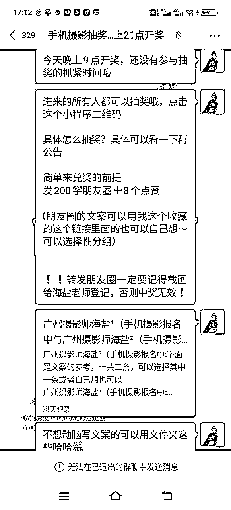
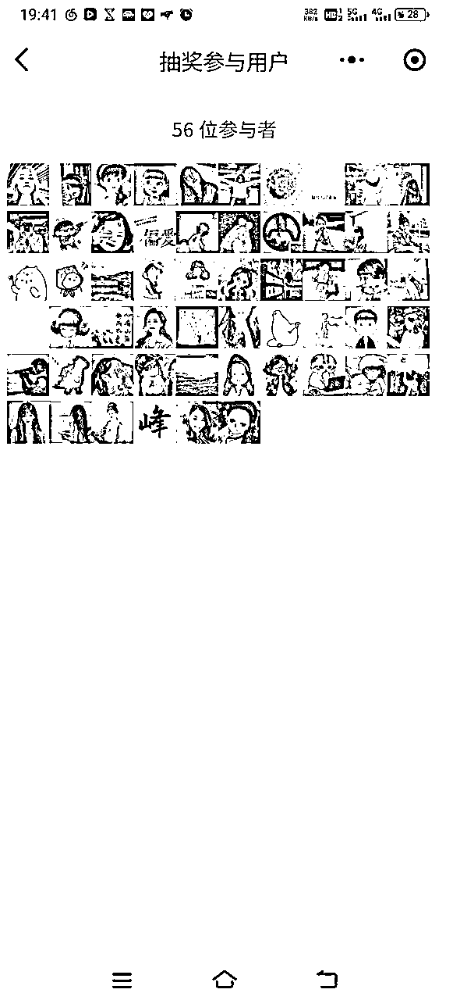
如果你曾经遇到类似困扰
想做免费群，但是不知道怎么做？
做了免费群，但是大家的参与感很低，不知道该怎么办？
想卖产品，但是不知道怎么引导互动？
……
你想解决以上问题，可以看看我今天的分享，以下的经验基本通用，下面分9个部分介绍
1/做免费的抽奖群的好处
2/奖品设计和抽奖软件
3/建群流程和发圈话术
4/在别人的群内怎么吸引加入
5/在自己的朋友圈怎么吸引加入
6/抽奖群活跃的必杀技
7/如何抽奖群的参与感？
8/哪些人合适做免费抽奖群
9/做免费抽奖群的注意事项
01造势成交。
从众现象相信大家应该都听说过
如果路过一个店铺，你看到店铺有很多人围观一个产品，你也会忍不住的想要去看一眼
相反，在隔壁家还有一家店铺，很冷清，一个人都没有，你可能也不太想要进去
我们做这个免费的抽奖群就是为了制造从众现象，就是为了进一步拉强势能。
还有一个很重要的点，人在消费这样东西，第一次看可能没什么感觉，第二次看也没什么感觉，但是如果老是看到就会觉得这个东西有点心动……
这个就是在制造从发现到被关注，最后被消费的一个流程
02营销素材。
当有人纷纷的把你的海报素材转发到自己的朋友圈的时候，你就可以多次截图发到自己的朋友圈，让别人觉得你很厉害。
因为黄婆卖瓜不能自夸，，但是可以让别人夸，我们要做的就是借别人的嘴夸自己。
01奖品设计
那么有人问了，我也想做一个免费的抽奖群，但是我不知道怎么设计奖品，接下来我就给大家分享一下如何设计合适的奖品。
一句话总结:
有关联，有实用，有种子，低成本，好交付
（这几个不需要同时具备，但是起码同时具备两个以上）
这个奖品一定要和你卖的产品有关联性，同时要有实用性或者有种子效应，还要低成本好交付
比如说我这次做的是手机摄影训练营，我的奖品设计
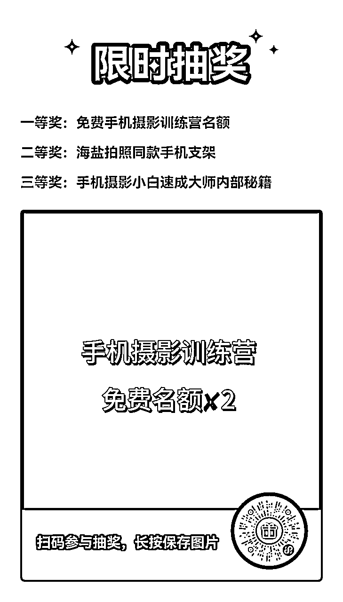
看到没有？我的每一个都奖品和我的课程有关系，关于奖品数量的话
一等奖一般设置1～3名，不要太多
二等奖也不要太多，建议三到五名左右
三等奖最好是人人有份参，相当于参与奖这个就可以激发参加的欲望及专家参加的人数
02抽奖软件
我用的是微信小程序抽奖助手
在里面发起就可以了，免费的，很好用！
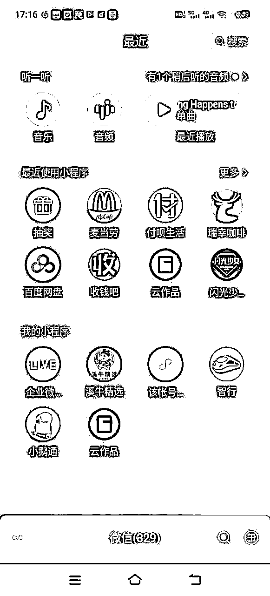
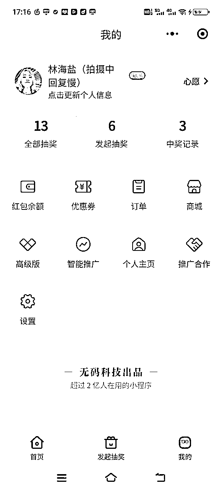
01建群和群公告:
建群:
直接在微信面对面建群就可以了，然后把群名字改成: 这个社群最大的福利是什么？你就用福利命名就行
比如我的
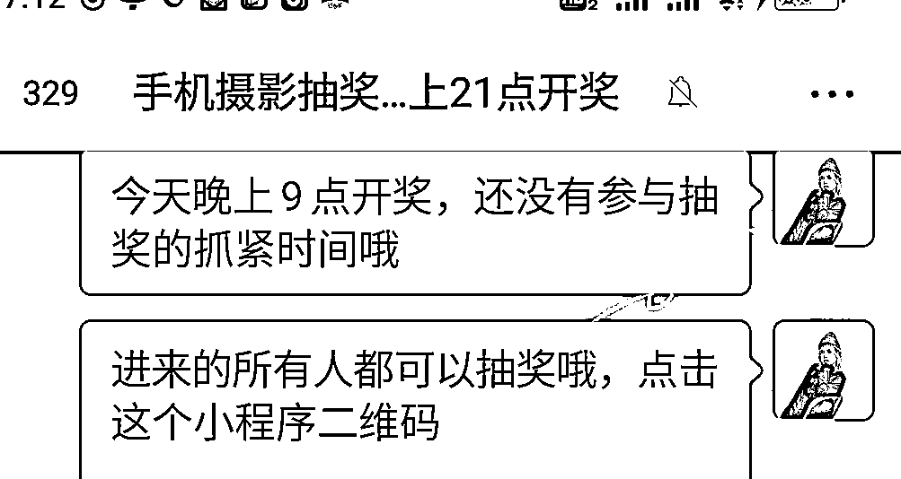
群公告:
主要是写奖品有哪些，对方需要怎么做？常见问题罗列出来就可以。
比如我的
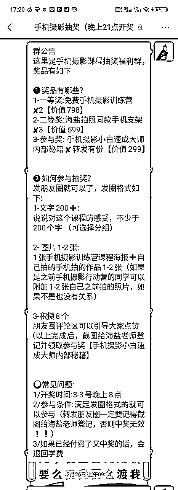
02发圈话术:
一句话总结 :
我为什么要参加➕我能得到什么？➕我需要怎么做？
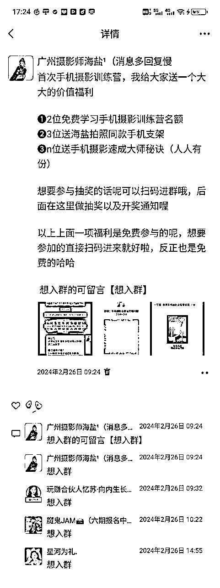
03如何正确留言引流？
自己先留言给暗号➕行动指引
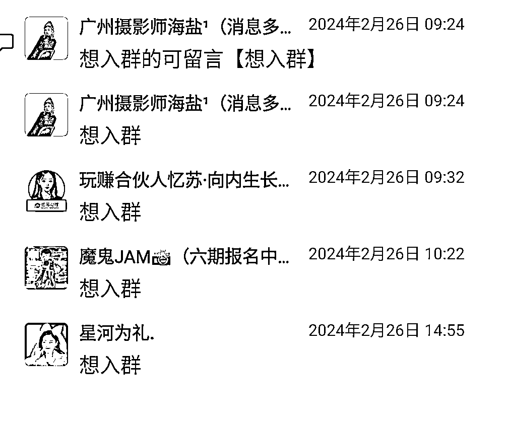
这个的前提有一个很重要，你要和群主打招呼，以及说好后续的分成形式，不要贸然在别人的群里面发，这样非常不礼貌
以上这个环节没有问题的了就可以进行以下操作。
大概就是说你做了一个什么事情，他们能得到什么好处，以及他们再需要怎么做？
这个分发圈那个有点像，
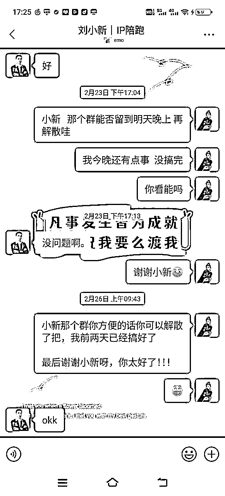
（备注: 因为我是玩赚的合伙人，也是上次玩赚行动营业手机摄影导师，所以说他们有在提倡我们引流自己的产品和销售自己的产品，所以我在里面做引流和转化动作是没有什么问题的，这就是付费高端圈子的好处）
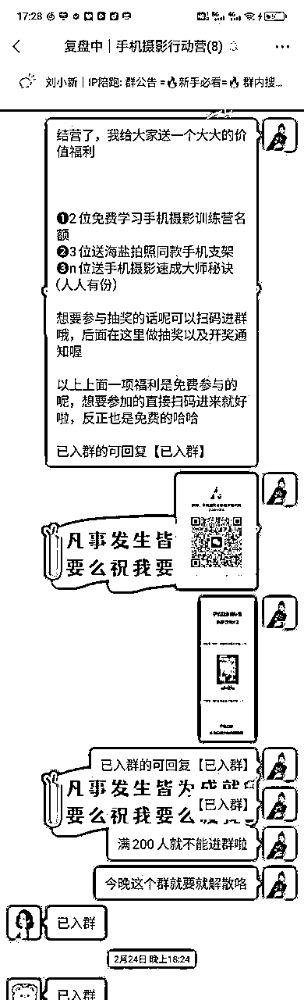
每个参加的都要让他们在群里面发截图➕发话术，这样才能够把智能罩起来，也能够激发其他人的参与动力。
这个这个动作非常非常重要，取决于你这个免费社群是否能够动起来的原因，主要原因之一。
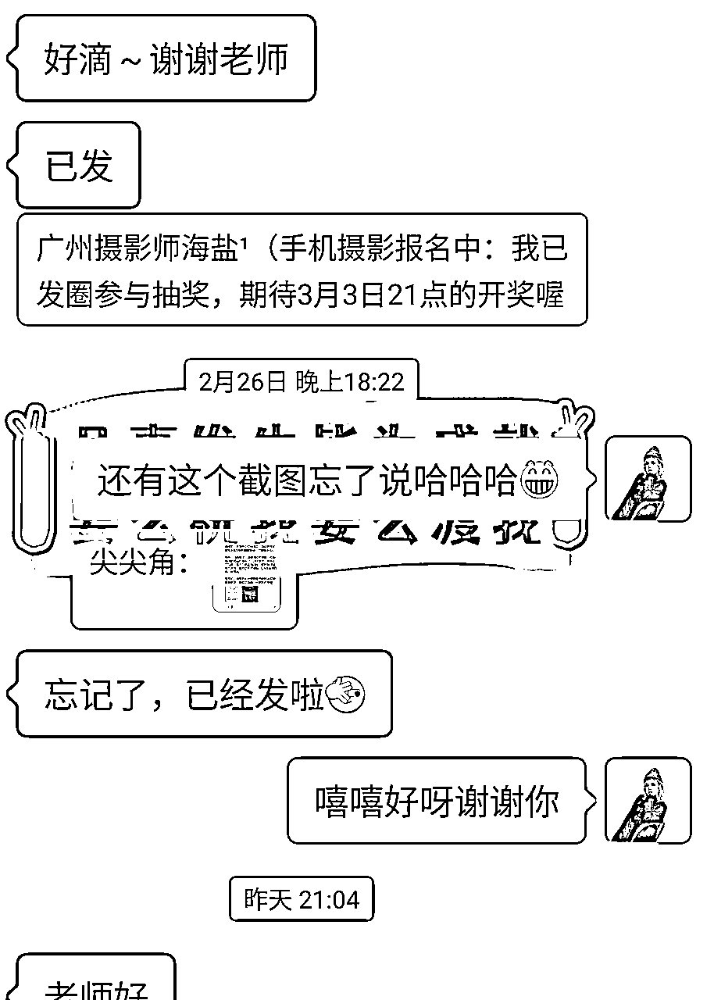
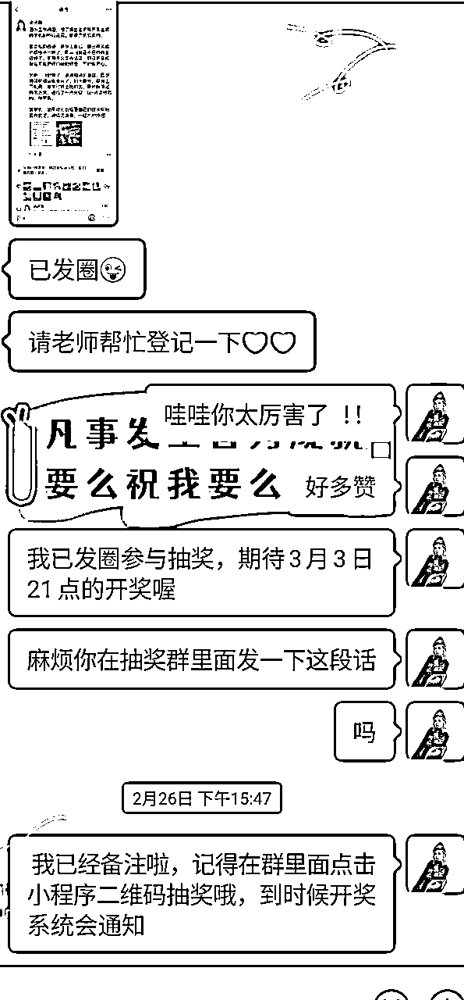
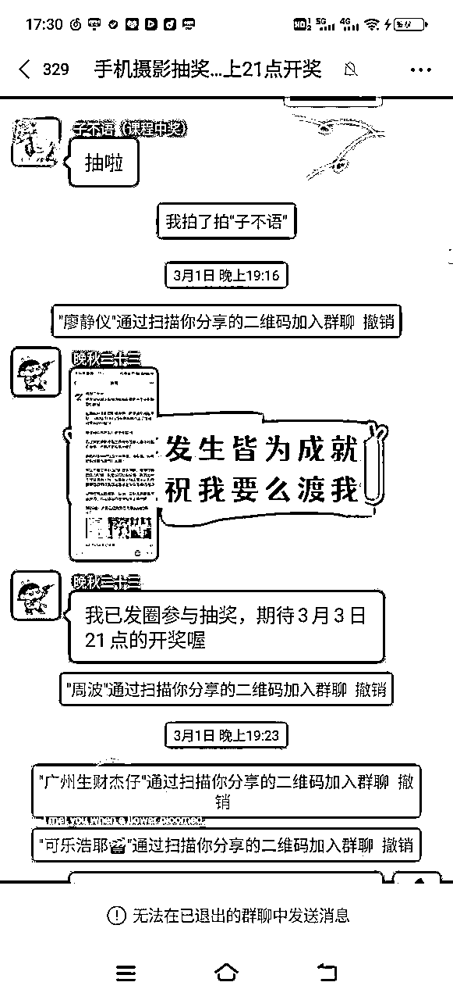
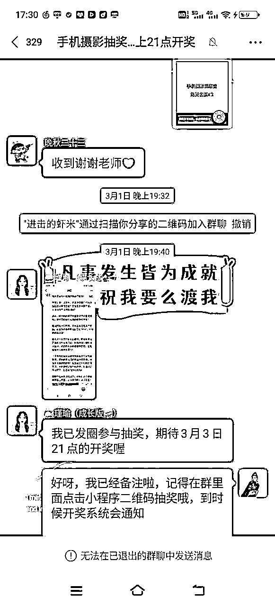
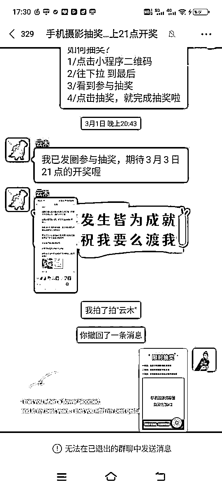
人性都是懒惰的，想增加大家的参与感，必须要把饭喂到嘴边。
我这次把转发的文案和图片以及参考案例全部做成了素材发给大家参考用或者复制用
总之～
你越是擅长帮别人减少麻烦，别人的行动就会越快。
比如我的素材
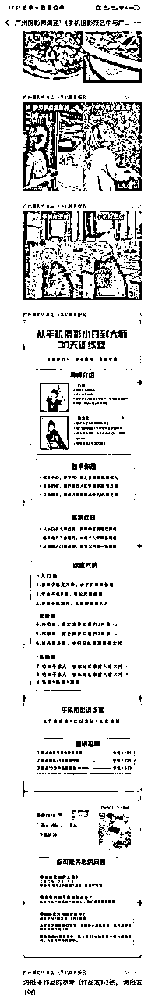
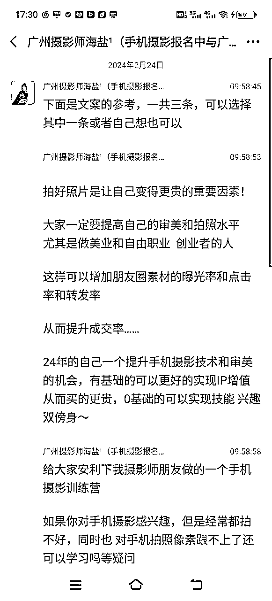
01新产品发售。
比如说我们这次的30天手机摄影训练营其实算是第一次正式的发售，对于我们来说是一个新的产品，所以就非常合适有这种形式。
02获取新流量。
获取新流量的有一个前提，进来的门槛要低，出去的门槛要高。
这句话是什么意思呢？
比如说低门槛 我们这次的手机摄影抽奖，抽奖的话呢是每个人都可以参与
高门槛 但兑奖的有一个前提，必须要发过朋友圈，并且集赞八个截图➕找我登记，否则中奖的话是不兑奖的。
这个可以把它写在那个抽奖链接里面。并且要在抽奖的同时说清楚，因为过后中奖了才说别人会觉得你扯皮没信用
03增加营销素材。
是谁曾经说过一段话，如果你想去某个地方，不要着急造船，而是先找到一群想要去这个地方的人，然后你们一起过去。
我们这次五十几个57个人参与，真正转发朋友圈的有三十几个，大概有一半，那这个素材的话呢我就有很多可以发了，再怎么样也比我一个人哼哧哼哧在那里发好叭！
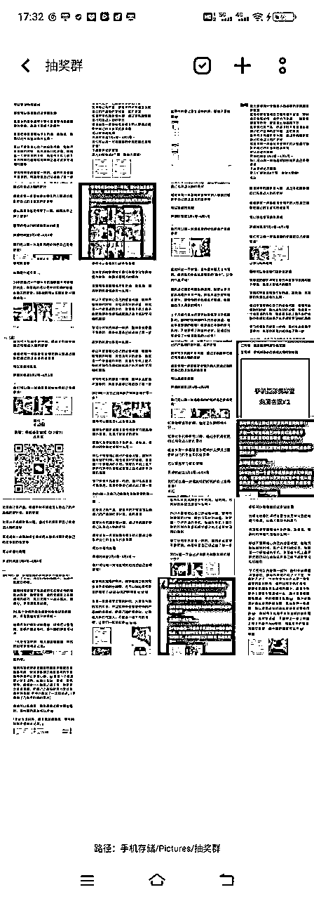
01不需要做什么创新，只要动作执行到位。
很多时候想做一件事情不要总想着创新，前期很重要的一点就是你把别人的步骤执行到位，你就能够做到70%以上的效果
02每个社群都有自己的生命周期和使命。
免费的抽奖群一般时间在三到七天，如果这个群的任务已经完成了，使命也完成了，那就可以解散了，不要留着在那里，没有用，也会更加影响后续的体验感。
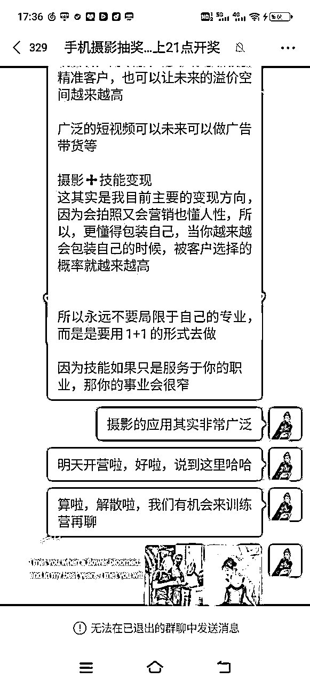
03群公告声明写好，不能互加好友。
否则永久拉黑或者踢出社群。
这个动作不可能每个人都做到，只能保证90%的人不会乱搞，如果没有这个在可能这个概率就会减少。
免费群一般不给加好友，付费群才可以。
这个就有点像我们在开车的时候看到那个栏杆写着撞坏需要赔多少钱，司机看到就会比较谨慎，因为他明确要付出的代价，所以我们这一步就是要把这个代价明码标价标价标出来。
04前期每天一次引导大家发圈，后期每天发三次引导发圈
前期的时候可以中午或者晚上发一到两次，引导大家发朋友圈就可以了
到了最后两天的时候，要增加频率大概3-5次以上
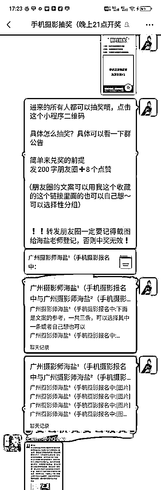
以上就是海盐 这一次做免费抽奖群的经验分享，希望对大家有帮助哟！